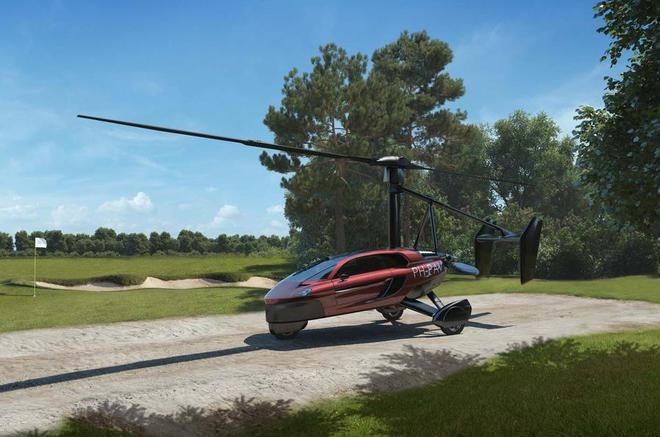
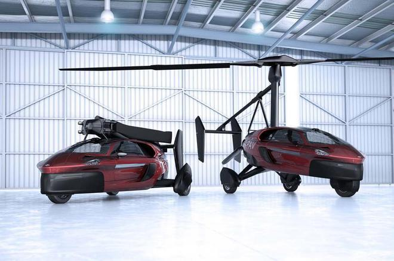
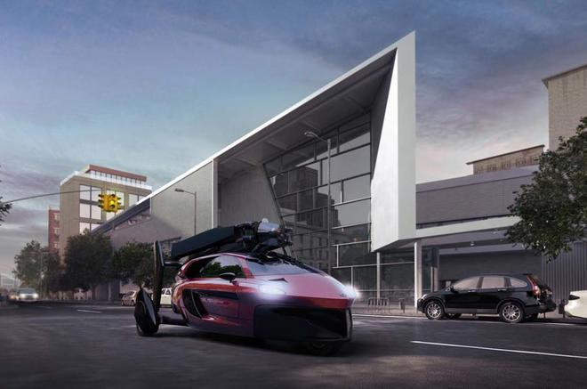

执行摘要 Executive Summary
- PAL-V Liberty 是一台「路上开 + 天上飞」的路行式旋翼机：三轮车身 + 折叠主旋翼 + 尾部推进螺旋桨，飞行时主旋翼靠气流自转产生升力，而不是像直升机那样由发动机驱动。 A roadable autogyro: a three-wheeler plus a folding main rotor and a pusher propeller; in flight the rotor autorotates to generate lift rather than being engine-driven like a helicopter.
- 它目前已证明的是：道路准入（荷兰 RDW，2020）、EASA「无技术异议 NTO」（2025-04）与生产组织批准（POA）；尚未取得的是航空型号合格证（TC），且生产型 Liberty 截至本文证据截止日仍未公开完成首飞，多源预计 2028 年前后。 Demonstrated: road approval (Dutch RDW, 2020), EASA “No Technical Objection” (Apr 2025) and Production Organisation Approval. Not yet: a Type Certificate, and the production Liberty has not publicly flown — multiple sources point to ~2028.
- 旋翼机路线有一个「反直觉」的安全卖点：发动机空中停车后不会像石头一样坠落，而是靠旋翼自转滑降。代价同样清晰——不能垂直起降，需要约 180 m 跑道滑跑，因此它和亿航 / 小鹏等多旋翼 eVTOL 不是同一类产品。 The counterintuitive safety payoff of a gyroplane: engine failure does not drop it like a stone — it autorotates down. The clear cost: no vertical takeoff, needing a ~180 m rollout, so it is not the same product class as multicopter eVTOLs.
- 它的适航基础是 EASA CS-27（小型旋翼机），适用对象是持有驾照 + 旋翼机飞行执照的私人，不是无人出租。市场结论应分级为「高端私人航空 / 收藏 / 培训可能成立，大众通勤不支持」。 Certification basis is EASA CS-27 (small rotorcraft) for a privately operated, licensed-pilot vehicle — not a pilotless taxi. Market verdict: premium private aviation / collection / training is plausible; commuting is not.
PAL-V Liberty 的技术创新点是把自转旋翼机与三轮倾斜底盘整合成一个可在路空之间折叠切换的系统，并用「道路 + 航空」双轨取证规避了「一车同时满足两套标准」的经典难题；但它真正卡住的不是「会不会飞」，而是生产型首飞与型号合格证迟迟未落地。研究越聚焦，越应把「已取证 / 已演示 / 未验证 / 未适航」分开陈述。
01 研究设计与证据边界 Research Design and Evidence Boundary
本文采用「系统综述式案例评估」，而非宣称完成全数据库、多评审员的正式系统综述。研究对象限定为荷兰 PAL-V 公司的 Liberty「FlyDrive」飞行汽车，时间范围为 2007/2008 年公司成立至 2026 年 11 月 22 日。
检索覆盖 PAL-V 官方页面与新闻稿、EASA（CS-27 认证基础、NTO 决定）、荷兰道路主管部门 RDW、荷兰皇家航空航天研究院（NLR）复合材料旋翼报告、同行评审论文，以及 BBC、The National、Aerospace Testing International、autocar（经环球网编译）等媒体。最关键的边界是：「道路取证」「EASA 无技术异议」能够支持「道路合规与航空取证路线获认可」这一观察，但不能自动证明生产型已具备可重复的飞行包线、安全完整性或型号合格证。[2][3][4]
官方披露只证明企业提出了某项指标或展示了某项行为；监管决定（RDW 道路准入、EASA NTO）属于外部权威证据；第三方报道用于交叉核验；论文与标准用于解释技术机理与合规要求；本文计算只用于建立数量级判断，均不冒充官方数据。
检索与筛选记录 Search and screening record
| 来源类别 Source class | 检索策略 Query strategy | 用途 Use |
|---|---|---|
| 企业官方 | pal-v.com 产品页、新闻稿（FlyDrive milestone） | 确认构型、折叠旋翼、交付与价格口径 |
| 监管机构 | EASA NTO / CS-27；荷兰 RDW 道路准入 | 确认双轨取证状态与适用标准 |
| 研究机构 | NLR 复合材料折叠旋翼报告 | 确认旋翼结构与折叠机构 |
| 新闻聚合 | 「PAL-V Liberty 首飞 / 认证 / 交付」「沙迦 生产」 | 映射报道簇、识别数字冲突 |
| 学术基线 | flying car; gyroplane/autogyro; eVTOL; SOTIF | 建立理论与技术基线 |
| 企业对照 | 亿航 EH216-S；小鹏汇天 陆地航母；Terrafugia Transition；Klein Vision AirCar | 比较产品类别与商业路径 |
说明：本页所有来源检索均于 2026-11-22 完成。不同报道在发动机配置、订单数量、价格货币口径上存在差异，正文中已逐处标注「官方口径」与「报道口径」的区分。
02 发展路径 Development Path
PAL-V（Personal Air and Land Vehicle，个人空陆载具）2007/2008 年前后成立于荷兰 Raamsdonksveer。与「从航空器出发、反向长出汽车」的小鹏汇天不同，PAL-V 走的是「从地面三轮车出发、再装上旋翼」的路径：先用 Carver 倾斜底盘解决三轮车过弯翻覆问题，再叠加自转旋翼系统，形成一套可在路空之间折叠切换的单一结构体。

这是一处罕见的证据倒挂：Liberty 的地面身份早在 2020 年就合法化，而空中身份——生产型首飞、型号合格证——反而迟迟未完成。「能合法上路」不代表「能合法上天」；二者之间隔着 CS-27 适航审定的完整周期。把「全球首款获准生产的飞行汽车」直接读成「已经能交付飞行」，是媒体报道中最常见的偷换。[5][7]
03 产品定义 Product Definition
PAL-V Liberty 不是「一台汽车」也不是「一台飞机」，而是一个单一结构体在两个模态间切换：路面是三轮车，空中是旋翼机。理解它的关键，是理解它只有一个机身，却要同时满足道路与航空两套监管身份——这与小鹏「陆地航母」把汽车与飞行器拆成两个独立模块、分头取证的分体式思路正好相反。
| 模态 Mode | 构型 Configuration | 关键参数 Key spec | 监管身份 Regulatory identity |
|---|---|---|---|
| 路面模式 Road mode |
三轮车身 + Carver 倾斜底盘（过弯向内侧倾），旋翼/螺旋桨折叠收纳 | 最高 ~160 km/h；0–100 km/h <9 s；道路续航 ~1300 km；车长约 4 m | 机动车（欧洲道路准入 / 荷兰 RDW） |
| 飞行模式 Flight mode |
自转旋翼机：折叠主旋翼展开 + 尾部推进螺旋桨；纵排双座 | 最高 ~180 km/h；航程 ~400–500 km；续航 ~4 h；升限 ~3500 m；需 ~180 m 滑跑 | 航空器（EASA CS-27 适航审定） |

「路行式（roadable）」是它区别于纯 eVTOL 与分体式方案的本质：同一副车身既要能过碰撞与道路法规，又要能过气动与适航。路行式的代价是重量与模态切换的机电复杂度（折叠机构、双发动机、双保险、双维保）；收益则是「从车库直接开到跑道，落地直接开回家」的端到端地面可达性，这是亿航、Joby 等固定起降场方案不具备的。
相比 Terrafugia Transition 这类「折叠固定翼」路行飞机，旋翼机的机翼（旋翼）占地更小、对起降场要求更低，落地后旋翼可沿中线折叠贴合车身；相比直升机，旋翼机的主旋翼在飞行中不需要发动机驱动、也没有复杂的变距与尾桨，机械上更简单。这些特性让它更适合「塞进一辆车的尺寸」。
04 系统架构与关键技术 Architecture and Technology
PAL-V Liberty 的技术创新不在「会飞」，而在三件事：自转旋翼升力系统、路空折叠切换机构、Carver 倾斜三轮底盘。三者共同回答了一个老问题——如何把一架飞机塞进一辆可上路的三轮车。
主旋翼 · Main rotor
自转升力（飞行中无发动机驱动）；直径约 10.75 m；碳纤维、中线折叠
尾部推进螺旋桨 · Pusher prop
提供前向推力，让气流驱动旋翼自转
fold & unfold · ~5–10 min
双发动机 · Twin engines
Rotax 912iS（飞行）+ 第二台道路发动机；空中两台并用、地面只用一台
倾斜底盘 · Tilting chassis
三轮 + Carver 动态车身控制（DVC 专利），过弯向内倾斜防翻覆
外部约束 · External（虚线边界之外，与机内硬件同等重要）
道路法规（RDW 已取证）· 航空适航（EASA CS-27，NTO→TC）· 起降跑道（≈180 m）· 双执照（汽车驾照 + 旋翼机飞行执照）· 天气/目视条件

4.1 自转旋翼：升力不靠发动机 Autorotation: lift without engine power
旋翼机与直升机的根本区别：直升机靠发动机驱动主旋翼同时产生升力与前向分量，而旋翼机靠尾部推进螺旋桨产生前向速度，气流穿过旋翼盘面驱动旋翼自转，再由自转的旋翼产生升力。[6] 地面滑跑时，通过取力器与离合器先把旋翼预旋到一定转速（约 185 rpm）再离地。[6] 这一原理带来两个直接后果：一是不能悬停、不能垂直起降；二是发动机停车时旋翼仍在自转，可受控滑降。
4.2 折叠旋翼 + 双发动机冗余 Folding rotor and twin-engine redundancy
飞行模式用 Rotax 912iS 航空活塞发动机驱动尾部螺旋桨；道路模式使用第二台小排量车用发动机（早期原型为 660 cc 涡轮三缸，约 65 hp），空中两台并用、地面只用一台。[6] 双发动机一方面提供动力冗余，另一方面是因为整车空重已达 664 kg、无空间布置涡轮增压所需的中冷与管路。[6] 碳纤维折叠旋翼沿中线折叠后贴合车身，与 NLR 合作完成。[1] 注意：发动机具体配置在官方与媒体口径间存在差异，本文并列标注。
4.3 Carver 倾斜底盘 Carver tilting chassis
旋翼折叠后整车重心升高，三轮车在低速过弯时极易翻覆。PAL-V 通过收购 CarverOne 的动态车身控制（DVC）专利，让车身像摩托车一样在弯道向内侧倾斜，保持三轮同时贴地。[6] 这套系统是「路空一体」得以成立的地面工程前提——没有它，折叠旋翼带来的重心问题会让路面模式不可用。
05 飞行的物理边界 The Physical Boundary of Flight
旋翼机的物理特性非常清晰：巡航效率高于多旋翼、起降场地要求低于固定翼，但不能垂直起降。多旋翼靠多个旋翼持续做功维持悬停，能量消耗高、速度上不去；旋翼机在平飞时旋翼靠气流自转、仅尾部螺旋桨持续做功，因此航程（~500 km）显著高于同尺寸多旋翼 eVTOL，但代价是必须滑跑起飞、不能悬停。
Liberty 起飞需要约 180 m 跑道滑跑，且需约 200×100 m 的安全空域。[6] 这意味着它不能像亿航 / 小鹏那样从楼顶或草坪直接垂直起飞，需要机场或跑道。把「飞行汽车」想象成「随时随地起飞」是一种常见误读——路行式旋翼机本质是「能上路的飞机」，不是「会飞的汽车」。
| 能力层级 Capability level | 定义 Definition | 2026 公开证据 Public evidence | 判定 Assessment |
|---|---|---|---|
| L1 抬升 / 离地 | 短时离地、可控起降 | PAL-V One 原型 2012 年首飞；生产型未公开首飞 | 原型已演示 |
| L2 自稳定 | 扰动下保持姿态并安全落地 | 旋翼机自转滑降原理成熟，但生产型试飞数据未公开 | 待系统验证 |
| L3 持续飞行 | 可重复的任务续航与飞行包线 | 官方宣称 ~500 km / 4 h，但生产型包线未通过取证锁定 | 待验证 |
| L4 运输运行 | 受监管区域内载人运输 | 道路已取证；航空 TC 未取得，首飞预计 2028 | 未成立 |
「会飞」与「飞行汽车」之间隔着四个问题：能否安全产生持续升力、能否在可控航迹上完成运输、能否在预期天气下重复运行、能否获得道路与航空两套体系的合法身份。Liberty 已经扎实回答了第四个问题的道路部分，第一、二、三问题仍主要停留在「原型已飞、生产型待飞」的状态。
06 安全、SOTIF 与适航 Safety, SOTIF, and Airworthiness
这是本案例最关键的一节。Liberty 走道路 + 航空双轨取证：道路侧（RDW）已闭环，航空侧（EASA CS-27）仍在进行。它能否作为飞行汽车交付，取决于航空型号合格证（TC），而不是道路准入。
| 时间 Date | 事项 Event | 状态 Status |
|---|---|---|
| 2020 | 欧洲道路准入（荷兰 RDW） | 已取证 |
| 2025.04 | EASA「无技术异议 NTO」（FlyDrive 类别首次，进入最后取证阶段） | 里程碑 |
| 2025 | 欧洲生产组织批准（POA） | 已取得 |
| ~2028 | 生产型首飞 + 型号合格证（TC） | 待落地 |
「无技术异议 NTO」是 EASA 对 PAL-V 合规验证路线图的背书，确认未发现阻碍取证的技术风险，但它不是型号合格证（TC）——真正的适航审定与试飞仍在后面。[2][3][4] 同理，「生产组织批准 POA」证明企业具备批量制造能力，也不等于产品已经适航。三者叠加，反映的是「取证路线清晰、取证仍未完成」。
自转旋翼的固有安全 The inherent safety of autorotation
旋翼机最常被引用的安全优势是：发动机空中停车后，旋翼仍靠气流自转，可像「梧桐籽」一样受控飘降，而不是像多旋翼失能那样直接坠落。[6] 但这一优势是「原理层面的固有安全」，不等于「全工况已验证」——其成立依赖足够的前向速度、高度与驾驶员操纵，且需要试飞数据坐实滑降包线。
安全框架与 SOTIF Safety framework and SOTIF
航空侧适用 CS-27（小型旋翼机）的适航要求；道路侧则要满足机动车功能安全（ISO 26262）与预期功能安全（ISO 21448 / SOTIF）的方法论。[14][15][16] SOTIF 在这里尤其关键：很多风险不来自硬件故障，而来自功能不足与合理误用——折叠旋翼未完全锁止就起飞、路空模态切换误操作、路面倾斜系统与飞行操纵的冲突、低空阵风下的自转包线边界等。公开材料尚未系统披露这些场景的风险接受与验证证据。
| 风险域 Risk domain | 可能危害 Potential harm | 必须验证的证据 Required evidence |
|---|---|---|
| 旋翼折叠机构 | 未锁止起飞、飞行中折叠失效 | 互锁、行程检测、紧急中止 |
| 动力与推进 | 发动机停车、推力丧失 | 自转滑降包线、双发动机冗余验证 |
| 模态切换 | 路↔空切换误操作、系统冲突 | 状态机、防误触、SOTIF 场景验证 |
| 倾斜底盘 | 路面过弯翻覆 | DVC 倾斜包线、侧风/路面摩擦验证 |
| 运营环境 | 跑道条件、低空阵风、目视误判 | 天气包线、起飞距离、跑道隔离 |
| 监管身份 | 无证运行、空域冲突 | TC、运行许可、双执照 |
07 应用场景 Application Scenarios
把「技术可行、运营可行、市场可行」当成三件事来评估，最先成立的场景不是城市通勤，而是私人高端飞行体验、区域点对点出行与飞行培训——这些场景恰好能发挥路行式「门到门 + 跑道起降」的特性。
| 场景 Scenario | 技术适配 Technical fit | 监管难度 Regulatory burden | 支付意愿 Willingness to pay | 综合判断 Verdict |
|---|---|---|---|---|
| 私人高端飞行体验 / 收藏 | 高 | 中 | 高 | 近期最现实 |
| 区域点对点（两城间短途） | 高 | 中 | 中 | 可试点 |
| 飞行培训 / 执照训练 | 高 | 中 | 中 | 可试点 |
| 应急 / 消防快速到达 | 中（荷兰消防部门已订） | 高 | 中 | 情境依赖 |
| 物流运输 | 低（载重小、需跑道） | 高 | 中 | 不适配 |
| 城市通勤 / 空中出租车 | 低（需跑道、无垂直起降） | 极高 | 中 | 不可行 |
表 5. 定性评估，不表示精确概率。技术适配考虑载荷、续航、起降与维护；监管难度越高，进入公共运行所需证据越多。
一个常被忽略的差异化场景是应急/消防：报道称荷兰消防部门已纳入首批客户。[5] 路行式在「先驾车抵达、再短距起降侦察/快速到达」上确有逻辑——但这也受跑道、天气与执照限制，只能作为情境依赖的补充能力，不能替代直升机或无人机。城市通勤则需要载客适航、起降网络与全天候高频周转，而 Liberty「需跑道滑跑」的物理特性本身就把这条路径排除了。
08 市场可行性 Market Feasibility
Liberty 的定价（Sport 版 €29.9 万、先驱版 €49.9 万，约合人民币 230–390 万元）决定了它不是一个大众产品，而是一个高端私人航空 / 收藏品类目。[1] 本文不把「飞行汽车万亿市场」直接乘上份额——那类宏观预测包含无人机、通航、基础设施与服务，不能用来给单款超高端产品定价销量。
需求侧：订单是什么性质 What the orders actually mean
订单口径在来源间存在差异：有报道称首批约 250 台已售出、订单排满未来三年，也有口径称约 100 台确定订单 + 约 1000 台购买意向，另有与 Jetex 在中东签下的 100+ 台合作。[5][7] 无论取哪个口径，这些数字都是意向性需求信号：证明一部分高净值客户与机构愿意为优先权承担资金占用，但不等于可确认收入、不可退款订单或可持续毛利。
| 情境 Scenario | 教学假设均价 Teaching price | 年交付量 Annual units | 订单转化率 Conversion | 年收入量级 Annual revenue | 成立条件 Condition |
|---|---|---|---|---|---|
| 保守 | €30 万 | 100 台 | ~10% | ~€0.3 亿 | TC 落地缓慢，仅欧洲小批量交付 |
| 基准 | €32 万 | 250 台 | ~25% | ~€0.8 亿 | TC 取得，欧洲 + 中东（Jetex）交付 |
| 积极 | €35 万（含服务） | 500 台 | 满产 | ~€1.75 亿 | 沙迦产线 + 海外取证 + 高净值需求持续 |
表 6. 价格为教学敏感性假设，非官方售价；交付量与转化率为情景变量，不构成销量预测。收入仅按「价格 × 交付量」估算，未扣税费、渠道、维保与事故成本。
真正的风险不在「有没有人围观」，而在生命周期成本 Lifecycle cost, not attention
一台路行式私人航空器的持有成本远超一辆车：双执照（汽车驾照 + 旋翼机飞行执照，报道称约 40 小时培训 + 多项考试）、双保险（路 + 空）、跑道/起降场使用费、空域申报、年度适航检查、碳纤维结构与折叠机构维护。[6] 若用户主要用途是低频体验，「单次飞行成本」会高到只有高净值客群能承受。因此市场结论应分级：事件营销价值高；限量销售可能成立；高频服务市场缺乏证据；大众出行市场不支持。
09 竞品比较 Comparison with Competitors
横向比较的关键不是谁飞得更高，而是每个产品如何闭环自己的验证路径，以及各自的物理取舍。
| 产品 Product | 类别 Class | 验证路径 Validation path | 主要优势 Strength | 主要约束 Constraint |
|---|---|---|---|---|
| PAL-V Liberty | 路行式旋翼机（三轮车 + 自转旋翼） | 道路（RDW，已取证）+ 航空（EASA CS-27，NTO→TC） | 门到门可达、航程较长、自转滑降安全 | 不能垂直起降、需跑道、生产型未首飞 |
| 小鹏汇天 陆地航母 | 分体式（陆行体 + 多旋翼 eVTOL） | 陆行体按机动车、飞行体按 CAAC TC/PC | 车机分工、C 照、移动补能、量产线 | 航程短、TC 未落地、运营复杂 |
| Terrafugia Transition | 路行式固定翼（折叠翼） | 道路 + 航空双轨（吉利旗下） | 固定翼巡航效率更高 | 翼展大、起降场要求高、量产未兑现 |
| Klein Vision AirCar | 路行式固定翼（折叠翼） | 斯洛伐克适航证（2022），城际飞行（2021） | 真完成过两城间飞行 | 仍属原型级、取证范围窄 |
| 亿航 EH216-S | 自主多旋翼 eVTOL | 全球唯一集齐 TC/PC/AC/OC + 商业运营 | 全链条合规、已运营 | 无人载客、航程约 30 km、无路行能力 |
| Joby S4 | 倾转旋翼有人 eVTOL | FAA 认证推进中 | 航程/速度、商业航线目标 | 适航周期、起降场、成本、无路行能力 |
竞品定位来自各企业公开页面，属企业自证材料，应与监管文件与第三方证据交叉使用。
三条路线的分野很清晰：亿航、Joby 从「航空器」出发，核心挑战是适航与运营成本；小鹏、Alef 从「道路与低空融合」出发，核心挑战是重量、模态切换与双重监管；PAL-V、Terrafugia、AirCar 从「路行式真飞机」出发，核心挑战是同一结构体同时满足道路与航空两套标准。PAL-V 的差异化，在于它用旋翼机而不是固定翼来压缩「飞机塞进汽车」的尺寸代价——但也因此放弃了垂直起降。
10 工程化路线（Go/No-Go 判据） Engineering Roadmap
可信的工程化路线不从「扩大宣传」开始，而从「定义可验证的包线与安全目标」开始。建议把下一阶段证据拆成四道门槛：
若四道门槛无法公开至少部分证据，最合理的结论不是「项目失败」，而是「仍停留在取证与工程集成阶段」。对研究者和学生而言，保留不确定性比用愿望填补空白更专业。
11 方法复用与延伸 Reusable Method
这个案例可以拆成五个可复用的分析步骤：① 制作证据表，把十条最吸引人的媒体陈述转成「来源 / 证据类型 / 可支持结论 / 不可支持结论」；② 画系统边界图，标出旋翼、推进、折叠机构、倾斜底盘、跑道与监管机构之间的接口；③ 写故障清单，至少覆盖旋翼折叠、动力、模态切换、倾斜与人员执照；④ 为六个场景建评价矩阵，而不是只讨论最乐观的通勤场景；⑤ 用市场敏感性表说明价格、转化率、交付量变化如何影响收入。
这一方法框架同样适用于其他研究对象：亿航 EH216-S、Joby S4、小鹏汇天陆地航母、Alef Model A、eVTOL 动力电池、分布式电推进、低空通信导航监视网络、垂直起降场或飞行汽车保险。方法框架保持一致，研究对象越具体，结论越可验证。
本页由 AI 辅助完成资料检索、结构与初稿撰写；关键数字均回溯至公开来源（见参考文献），作者已对「生产型首飞时间」「发动机配置」「订单数量」「价格货币」等冲突信息逐处核对并标注。
12 局限与未决问题 Limitations and Open Questions
- 生产型 Liberty 截至本文证据截止日未公开首飞，飞行包线、起飞距离、自转滑降包线等关键数据缺失。
- 发动机配置存在口径不一（飞行用 Rotax 912iS 较一致，道路用第二台发动机在「大发 Copen 660cc」与「双 Rotax」之间说法不一），本文并列标注但无法单方面裁决。
- 订单数量存在口径不一（首批 250 台 vs 约 100 台确定 + 1000 台意向），价格存在 EUR/GBP/USD 多种货币口径，本文已标注。
- 本文物理与市场判断只建立数量级边界，不替代工程试验或财务预测。
- 适航状态变化快，TC 一旦落地将显著改变本文「生产型未首飞 / 运输运行未成立」的结论。
参考文献 References
引用采用 GB/T 7714—2015 顺序编码制，访问日期统一为 2026-11-22。
- PAL-V. PAL-V Liberty 官方产品页[EB/OL]. [2026-11-22]. https://www.pal-v.com/
- PAL-V. FlyDrive Company PAL-V Clears Essential Certification Milestone[EB/OL]. 2025-04[2026-11-22]. https://www.pal-v.com/en/press/flydrive-company-pal-v-clears-essential-certification-milestone
- Aerospace Testing International. Dutch flying car developer Pal-V gets go-ahead for EASA certification[EB/OL]. 2025-04[2026-11-22]. https://www.aerospacetestinginternational.com/news/dutch-flying-car-developer-pal-v-gets-go-ahead-for-easa-certification.html
- HeliHub. EASA issues 'No Technical Objection' to PAL-V[EB/OL]. 2025-04-07[2026-11-22]. https://www.helihub.com/2025/04/07/easa-issues-no-technical-objection-to-pal-v/
- The National. Production of $800,000 'flying car' prepares for lift-off in Sharjah[EB/OL]. 2025-04-18[2026-11-22]. https://www.thenationalnews.com/news/uae/2025/04/18/production-of-800000-flying-car-gears-up-for-lift-off-in-sharjah/
- 环球网（编译自 autocar）. PAL-V Liberty 飞行汽车实际驾驶体验 小马力发动机乐趣多[EB/OL]. [2026-11-22]. https://auto.huanqiu.com/article/3xqIDpRCprD
- BBC Türkçe. Hollandalı şirkete 'dünyanın ilk ticari uçan otomobili' için üretim izni[EB/OL]. [2026-11-22]. https://www.bbc.com/turkce/articles/c4gj8z3e5vpo
- eVTOL Insights. EASA issues "no technical objection" to PAL-V's FlyDrive Vehicle certification roadmap[EB/OL]. 2025-04[2026-11-22]. https://evtolinsights.com/easa-issues-no-technical-objection-to-pal-vs-flydrive-vehicle-certification-roadmap-clears-essential-milestone/
- EASA. CS-27: Certification Specifications for Small Rotorcraft[S]. Cologne: EASA.
- PAN G, ALOUINI M-S. Flying Car Transportation System: Advances, Techniques, and Challenges[J]. IEEE Access, 2021, 9: 24586-24603. DOI:10.1109/ACCESS.2021.3056798.
- AHMED S S, HULME K F, FOUNTAS G, et al. The Flying Car—Challenges and Strategies Toward Future Adoption[J]. Frontiers in Built Environment, 2020, 6: 106. DOI:10.3389/fbuil.2020.00106.
- RAJASHEKARA K, WANG Q, MATSUSE K. Flying Cars: Challenges and Propulsion Strategies[J]. IEEE Electrification Magazine, 2016, 4(1): 46-57. DOI:10.1109/MELE.2015.2509901.
- INTERNATIONAL ORGANIZATION FOR STANDARDIZATION. ISO 26262:2018 Road vehicles — Functional safety[S]. Geneva: ISO, 2018.
- INTERNATIONAL ORGANIZATION FOR STANDARDIZATION. ISO 21448:2022 Road vehicles — Safety of the intended functionality[S]. Geneva: ISO, 2022.
- INTERNATIONAL ORGANIZATION FOR STANDARDIZATION. ISO 34502:2022 Road vehicles — Scenario based safety evaluation framework[S]. Geneva: ISO, 2022.
- 亿航智能. EH216-S 产品与运营[EB/OL]. [2026-11-22]. https://www.ehang.com/